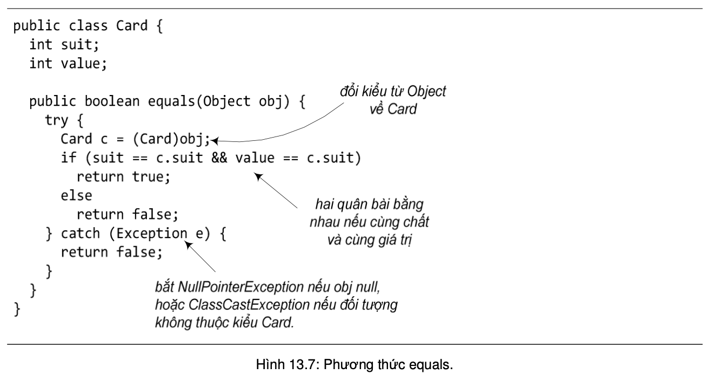
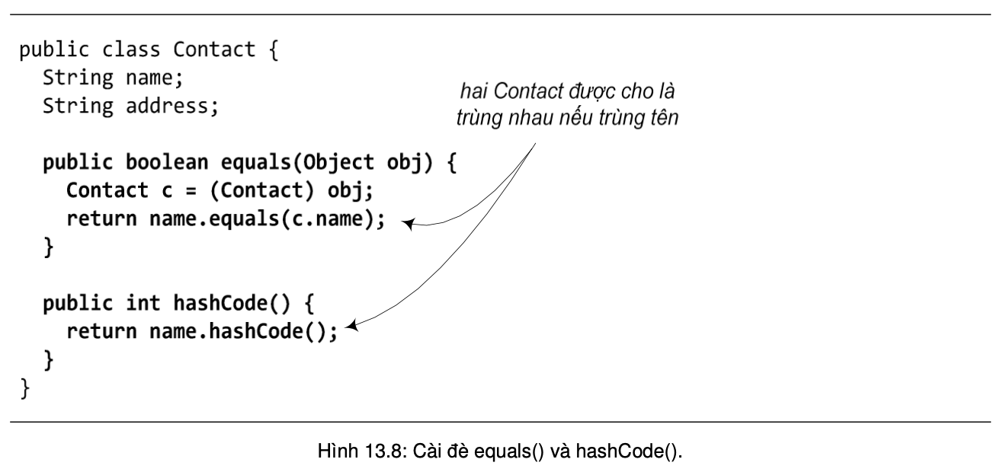
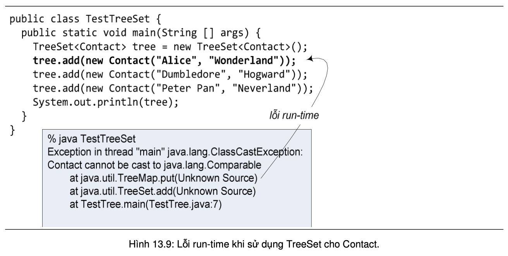

Trong interface Collection có quy định một số phương thức để kiểm tra các đối tượng có bằng nhau hay không. Ví dụ, contain(object) và remove(object) tìm trong collection một phần tử có giá trị bằng đối tượng đối số. Tuy nhiên, phép so sánh bằng không phải vấn đề đơn giản. Phép so sánh bằng (==) không dùng được cho so sánh đối tượng do nó thực chất chỉ kiểm tra xem hai đối tượng có ở cùng một chỗ trong bộ nhớ hay không. Còn ở đây, ta coi hai đối tượng là bằng nhau nếu chúng biểu diễn cùng một giá trị. Hai đối tượng kiểu Date được coi là bằng nhau nếu chúng biểu diễn cùng một thời điểm. Phép so sánh lớn hơn, nhỏ hơn cũng cần thiết cho một số công việc như sắp xếp, chẳng hạn phương thức tổng quát Collections.sort(list) trong Java API yêu cầu dữ liệu phải cung cấp thao tác này. Trong khi đó, các phép toán < và > không dùng được cho các đối tượng. Mục này nói về việc cung cấp các phương thức so sánh cần thiết cho các kiểu dữ liệu mà ta muốn sử dụng trong các cấu trúc collection.
Lớp Object định nghĩa phương thức equals(Object) trả về giá trị boolean để kiểm tra xem hai đối tượng có bằng nhau hay không. Do đặc điểm tổng quát của Object, cài đặt của phương thức này tại Object không dùng được cho hầu hết các lớp con. Do đó, lớp nào cần dùng đến phương thức này đều cần cài lại. Chẳng hạn, lớp String cài đè phương thức equals để s.equals(obj) trả về true nếu s và obj chứa chuỗi kí tự giống hệt nhau. Các phương thức remove() và contains() nói trên của Collection gọi đến phương thức equals() của từng phần tử để so sánh các đối tượng. Do cơ chế đa hình, Object là lớp cha của tất cả các lớp khác, nên phiên bản cài đè của các lớp con sẽ được sử dụng.
Nếu ta sử dụng các cấu trúc tập hợp (kiểu Set), ta còn cần phải cài thêm một phương thức khác, đó là hashCode(), một trong các phương thức được thừa kế từ Object với hành vi mặc định của phiên bản thừa kế từ Object là cho mỗi đối tượng một giá trị băm khác nhau. Khi cần kiểm tra xem hai đối tượng có trùng nhau hay không, một cấu trúc HashSet sẽ gọi đến phương thức hashCode() của hai đối tượng để lấy giá trị băm của chúng. Nếu hai đối tượng có giá trị băm khác nhau, HashSet sẽ khẳng định chúng là hai đối tượng khác nhau. Còn nếu giá trị băm trùng nhau (dữ liệu khác nhau có thể có giá trị băm trùng nhau), HashSet sẽ dùng đến phương thức equals() để kiểm tra tiếp xem hai đối tượng có thực sự bằng nhau hay không.
Tương tự với so sánh bằng là vấn đề so sánh lớn hơn, nhỏ hơn. Giả sử ta cần một cấu trúc contactList là danh sách các địa chỉ liên lạc – lớp Contact như đã cài ở mục trước, và đôi khi ta cần danh sách đó được sắp xếp theo tên. Có một số cách để làm việc này với các lớp có sẵn trong Collection framework. Ta có thể dùng phương thức Collections.sort() đối với danh bạ ở dạng một đối tượng List, hoặc dùng một cấu trúc tự động sắp xếp chẳng hạn như TreeSet để lưu danh bạ. Cả hai cách đều cần phải so sánh hai đối tượng Contact để biết đối tượng nào "lớn hơn" hay "nhỏ hơn".
Tương tự như tình huống so sánh bằng, TreeSet, hay Collections không thể tự biết cách so sánh các đối tượng thuộc các lớp mà lập trình viên tự xây dựng. Chương trình như trong Hình 13.9 biên dịch không có lỗi do add() không yêu cầu tham số kiểu Comparable, nhưng khi chạy thì gặp lỗi run-time đối với lệnh đầu tiên gọi đến phương thức đó.
Tóm lại, các phần tử của cấu trúc danh bạ phải thuộc lớp đối tượng có cung cấp phương tiện so sánh. Ta có thể chọn một trong hai cách sau để giải quyết vấn đề đó: